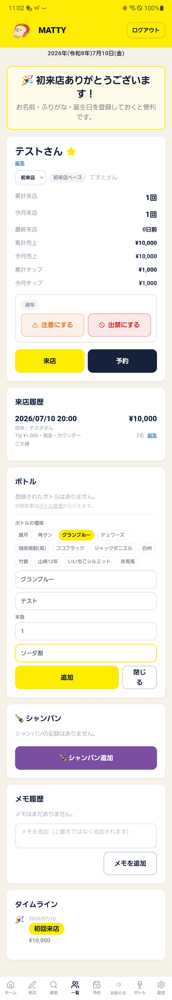

初めてのお客様を保存すると、そのまま「顧客詳細」画面が開き、ボトルの入力欄もすでに開いた状態になっています。
初来店の来店登録画面で「保存」を押すと、自動的にその方の「顧客詳細」画面に移ります。初来店のときだけ、ボトルの入力欄も最初から開いた状態になっています。

保存直後の画面全体です。ボトルの種類「グランブルー」を選び、ボトルネームとメモ（ソーダ割）を入力して「追加」を押すだけです。
「ボトルの種類」から、あてはまるものを押します。例えば グランブルー を押すと、下のボトルネーム欄に「グランブルー」と自動で入ります。
キープ札に書く名前（ボトルネーム）が分かれば、そのまま入力します。分からなければ空欄のままで大丈夫です。
割り方など、覚えておきたいことがあればメモ欄に入力します（例：ソーダ割）。無ければ空欄のままでOKです。
追加 を押せば、ボトルが登録されます。